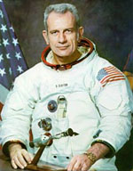

A Saint Paul (Minnesota), "Deke" (D. K) Slayton, pilote d'essai sur P-51, prend en chasse un disque à 3000 m qui l'avait approché à 150 m. L'ovni se dérobe à grande vitesse :
Eh bien, Slim (surnom que donnent ses amis astronautes à McClelland), je pilotais un Mustang P-51 à environ 12000 pieds au-dessus de Minneapolis en 1951. Je pensais que c'était simplement un cerf-volant. En volant plus près de lui j'ai pu le regarder et j'ai alors pensé qu'il s'agissait d'un ballon météo. Mais je suis passé en-dessous et je peux dire que ce n'était pas un ballon. Cela ressemblait à un disqueHynek, Josef Allen: 1979.Egalement dans son autobiographie :
J'effectuais un vol d'essais sur un chasseur P-51 à Minneapolis quand j'ai repéré cet objet. J'étais environ à 10 000 pieds en ce bel après-midi ensoleillé. J'ai pensé que c'était un cerf-volant, puis j'ai réalisé qu'aucun cerf-volant ne pourrait voler aussi haut. Comme je me rapprochais, cela ressemblait à un ballon-sonde, gris et d'un diamètre d'environ 1 m. Mais aussitôt que je me plaçais derrière cette sacré chose, cela ne ressemblait plus à un ballon. Cela ressemblait à une soucoupe, un disque. Au même instant, je pris conscience qu'il s'éloignait de moi tout d'un coup -- et j'étais là, volant à plus de 500 km/h. Je l'ai poursuivi pendant quelques instants et puis subitement cette fichue chose a simplement 'décollé'. Elle a grimpé avec un angle de 45° en virant et en accélérant et a tout bonnement disparu. 2 jours plus tard, je prenais une bière avec mon commandant, et je me suis dit : "Bon sang, je devrais lui en parler". Je l'ai fait et il m'a dit d'aller aux renseignements et de leur faire un rapport. Je l'ai fait, et je n'en ai plus jamais entendu parlerSlayton, D. K.: "Deke! - U.S. Manned Space: From Mercury to the Shuttle", 1994.